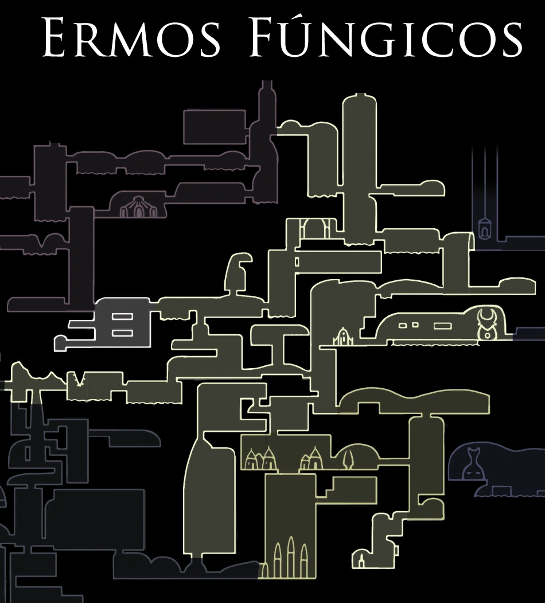

Ermos Fúngicos
Descrição
As cavernas nocivas dos Ermos Fúngicos estão cobertas por cogumelos de todos os tipos. Além disso, piscinas cáusticas de ácido são abundantes em toda a área. Os Ermos Fúngicos são habitados pelo Clã dos Cogumelos, um grupo territorial que representa uma ameaça para qualquer um que se aventure nas proximidades. A Tribo Louva-a-Deus faz de sua casa mais adentro da área e são igualmente hostis a estranhos
História
A população nativa dos Ermos Fúngicos é composta principalmente pelo Clã dos Cogumelos e pela Tribo Louva-a-Deus. O Clã dos Cogumelos é um grupo de criaturas fúngicas que compartilham uma mente comum. Eles fazem fronteira com o Ninho Profundo, com cujos habitantes estiveram em conflito. Quando o Rei Pálido chegou em Hallownest, eles aceitaram seu governo devido à sua forte crença de que sua visão poderia protegê-los. No entanto, a Tribo Louva-a-Deus, que vive na parte sul da área, não tinha amor pelo reino de Hallownest. Os Louva-a-Deus concordaram com uma trégua onde manteriam a soberania sobre seu território e, em troca, manteriam as feras do Ninho Profundo afastadas. Os Ermos Fúngicos foram uma área importante para os viajantes. O Caminho do Peregrino, uma estrada que ligava a Encruzilhada Esquecida à Cidade das Lágrimas, passava pelas cavernas. A Estação da Rainha conectava Cânion da Névoa e os Ermos Fúngicos às Estações de Besouro, tornando-se um centro de viagens para os viajantes que queriam visitar os arredores de Hallownest. Quando a Infecção se espalhou pela terra, o Clã dos Cogumelos se infectou e começou a se tornar agressivo com os estranhos. Embora a Tribo Louva-a-Deus não tenha sucumbido à Infecção, eles mantiveram a tradição de atacar qualquer um que se aproximasse de sua aldeia.
Dados
- Dificuldade Médio-Difícil
- Variedade de inimigos10
- Fonte:
- Visitar